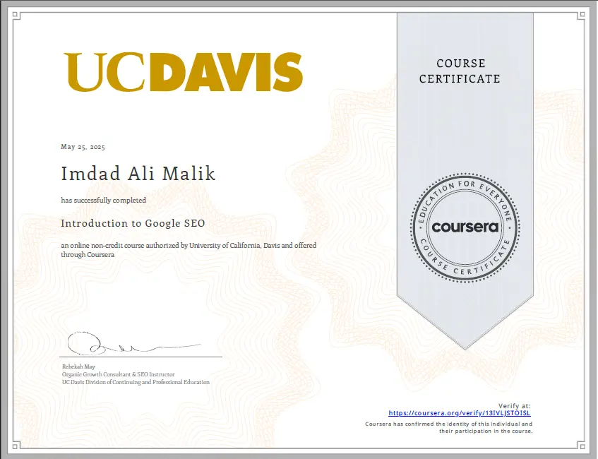
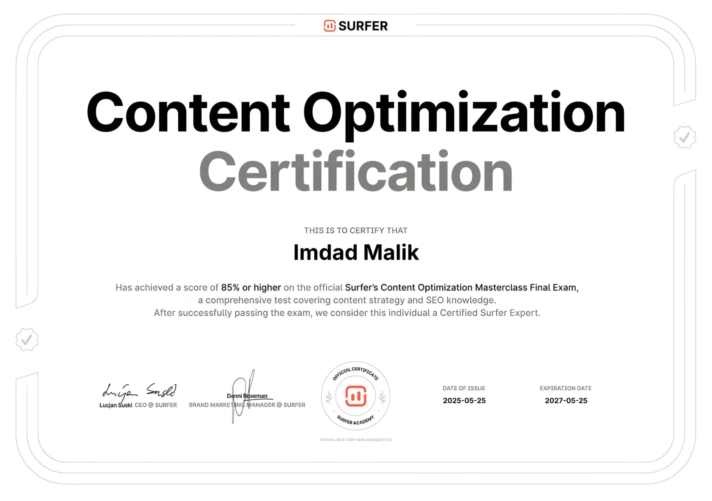

Find the gaps
Spot the technical, content and local problems that hold back your visibility in Dubai.
Imdad Malik is a Global SEO Specialist and AI Search Strategist based in Pakistan. He works remotely with businesses in Dubai and across the UAE on SEO, AI SEO and GEO, in English and Arabic.
Short answer: an SEO consultant for a Dubai business audits your website, finds what holds back your search visibility, and gives you a written, prioritized plan. Imdad Malik adds AI SEO, GEO and AEO work so your pages can also be quoted in AI answers, and he covers both English and Arabic searches. He is based in Pakistan, one hour ahead of the UAE, and works with UAE businesses remotely.
This page is also available in Arabic: النسخة العربية.An SEO consultant for a Dubai business studies your website and your search market, then tells you what to fix first and why. In Dubai that market is crowded and bilingual, so the work covers technical health, search intent in English and Arabic, content, local signals such as your Google Business Profile, and authority.
You get senior guidance on priorities. Your team can carry out the changes, or Imdad Malik can help implement them.
Spot the technical, content and local problems that hold back your visibility in Dubai.
Rank the fixes by likely impact so your budget goes where it counts.
Follow impressions, positions, clicks and enquiries instead of vanity numbers.
AI search tools such as Google AI Overviews, ChatGPT and Perplexity answer questions directly and cite a few sources. Becoming one of those sources is the aim of GEO (Generative Engine Optimization), while AEO (Answer Engine Optimization) structures your pages so answers can be quoted accurately.
UAE searchers use both English and Arabic, so your content has to be clear in the language your customers use. Google's own guide to AI features in Search says no special optimization is required for AI Overviews and that SEO fundamentals still apply, so GEO builds on strong SEO and does not replace it.
Helps your pages rank in search results.
Makes your content a source that AI tools cite.
Structures direct answers, FAQs and schema.
Pakistan is one hour ahead of the UAE, so working hours overlap almost fully. Every project follows five steps.
Tell Imdad Malik what you sell, who you want to reach and which markets matter most.
Check crawling, indexing, speed and on-page signals, and review the queries your customers use in English and Arabic.
Receive a clear scope with deliverables, a timeline and how results will be reported.
Technical fixes, content, internal links and entity signals, done by Imdad Malik or your own team.
Review progress from Search Console and analytics, then adjust the plan based on the data.
Imdad Malik provides these SEO services in Dubai and across the UAE, with a focus on search that leads to real enquiries.
Crawling, indexing, canonicals, page speed and structured data that matches the visible text.
Google Business Profile and local signals for searches in Dubai and other UAE cities.
Prepare pages for AI-powered search features, also called LLM SEO, while keeping the SEO fundamentals strong.
Direct answers, FAQs and schema so answer boxes and assistants can quote you accurately.
Connect topics, brand and author details so your site covers a subject fully and reads as one clear entity.
Keyword research and content planned separately for each language, not simply translated.
Imdad Malik works with businesses in Dubai, Abu Dhabi, Sharjah, Ajman, Ras Al Khaimah, Fujairah and Umm Al Quwain. Instead of near-identical pages for each emirate, this page covers the whole UAE, and the plan is built around where your customers are.
The approach suits service businesses, online stores and agencies. Some current client projects are confidential and are not named here.
Imdad Malik holds the UC Davis SEO Specialization from Coursera and the Surfer SEO Masterclass certificate, with more than five years of professional SEO and digital marketing experience. He also leads iCreatixPRO, an SEO and AI-search agency, and his LinkedIn profile lists his projects and tools.

Professional SEO learning credential from the University of California, Davis program delivered through Coursera.

Professional training covering practical search and content optimization concepts.
The CEO of a UK advertising and marketing company rated the work 5.0 out of 5 on Clutch in October 2025. The review describes growth in organic traffic and conversion rates, on-time delivery and clear communication.
It is one review, so read it in full on the iCreatixPRO Clutch profile and check the portfolio below for yourself. Imdad Malik also has a Google Business Profile with his business details.
The portfolio contains project records and supporting examples of SEO work, so you can judge the experience first-hand and not rely only on the summary on this page.
View SEO project portfolioSEO consultant pricing in Dubai depends on the scope of work, how crowded your market is, the size of your website, whether you need English only or English and Arabic, and how much ongoing support you want. No single price fits every project.
Ask every consultant for a written scope with deliverables, a timeline and a reporting plan, and compare proposals on that basis. To get a scoped proposal, send Imdad Malik your website and goal through the contact page.
An audit, a content plan and ongoing support are different amounts of work.
Crowded Dubai markets need more content and authority work than niche ones.
A large online store has more pages to audit, fix and monitor than a small business site.
English and Arabic search each need their own research and content.
Short answers to the questions UAE businesses ask before hiring an SEO consultant.
Not necessarily. SEO is delivered remotely, so what matters is knowledge of your market, your languages and your goals. Imdad Malik is based in Pakistan, one hour ahead of the UAE, and works with UAE businesses remotely.
It depends on the scope of work, competition, website size, languages and the level of ongoing support. Ask for a written scope with deliverables, a timeline and reporting before you compare prices.
Competitive Dubai keywords usually need several months of steady work before clear gains, and the timing depends on competition and site authority. Early signs such as more impressions often appear before clicks and leads.
SEO aims to rank your pages in search results, while GEO aims to make your content a source that AI tools such as Google AI Overviews and ChatGPT cite in their answers. GEO builds on SEO and does not replace it.
A consultant usually provides strategy, audits and guidance from one senior person, while an agency usually supplies a larger team to carry out several kinds of work. Choose a consultant when you need direction or a defined specialist, and an agency when you need broad execution.
Yes. Imdad Malik works on both English and Arabic search, including keyword research and content planning for each language, because UAE searchers use both.
Share your website and your goal, and get the scope in writing. Imdad Malik, a Global SEO Specialist and AI Search Strategist based in Pakistan, can review your site and explain what to fix first.
You can also read about his work in Pakistan on the SEO consultant in Pakistan page or in the Top 10 SEO Experts in Pakistan guide.
Discuss your UAE project Message on WhatsApp Explore SEO services